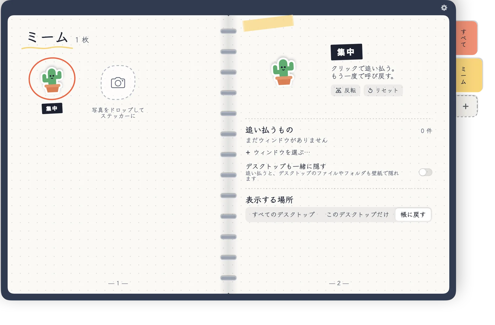

Macのデスクトップに貼るステッカー手帳
ステッカーをクリック、ウインドウが消える。
Shooをデスクトップに貼って、どのアプリやウインドウを担当するか決めましょう。ワンクリックでまとめて消え、もう一度クリックすると元の場所に戻ります。


どのステッカーも、このページの一部を担当しています。クリックしてみて。
ワンクリックで、すっきりデスクトップ。
試してみて：場面を選んで、小さな悪魔をクリック。
クリック！
自分だけのステッカーに
どんな写真もステッカーに——うちの犬、友だち、お気に入りのミーム。1枚ずつに別の役目を。

写真を手帳にドラッグクリックするだけでもOK
- 写真をドロップすると、Macの中で切り抜き
- 自分だけのタブと色で整理
- ステッカーごとに隠すウインドウを決められる
使いかた
3ステップ。設定画面はありません。
1
ステッカーをはがす
手帳からステッカーをドラッグして、デスクトップの好きな場所に貼ります。
2
ウインドウを指さす
「ウィンドウを選ぶ…」を選び、担当させたいウインドウやアプリをクリックします。
3
クリック、Shoo！
ステッカーをクリックするとまとめて隠れ、もう一度で戻ります。
気持ちよく使える小さな工夫
すべてMacの中、手帳の上で完結します。
- ウインドウ単位でもアプリごとでもSafari、Chrome、メモ、Finderはウインドウ単位で隠せます。ほかのアプリはまとめて隠れます。
- デスクトップも一緒に隠すステッカーが有効な間、自分の壁紙でデスクトップのファイルを覆います。
- すべてのデスクトップ、またはこのデスクトップだけステッカーを全デスクトップに出すことも、ひとつに置くこともできます。
- 手帳の中で直接編集名前・大きさ・回転・反転を、見ている場所でそのまま。
- じゃまにならないDock、メニューバー、どちらにも表示しない、を選べます。
- 6つの言語English、繁體中文、简体中文、日本語、한국어、ไทย。
無料ではじめる
小さな悪魔は無料で、全機能つき。ほかは買い切りで解放。サブスクリプションはありません。
 無料
無料
赤い小さな悪魔
- 1枚のステッカーで全機能
- ウインドウ・アプリ・デスクトップを隠す
- すべての言語
 すべてを解放
すべてを解放
買い切り
- 手描きステッカーがあと5種類
- 自分の写真からステッカーを作成
- 自分だけのカテゴリタブと色
- ステッカーは何枚でも

あなたのデスクはあなたのもの
- アカウント不要、広告なし、トラッキングなし
- ステッカーと設定はあなたのMacの中だけ
- 写真の切り抜きはMacの中で。アップロードなし
- Shooは選んだウインドウを隠したり戻したりするだけで、中身は読みません
よくある質問
Safari、Chrome、メモ、Finderの操作許可を求められるのはなぜ?
それらのアプリでウインドウを1つだけ隠すための仕組みです。Shooは選んだウインドウを隠す・戻す指示だけを送ります。許可しない場合は、アプリごと隠します。
どんなアプリでも隠せますか?
はい。どのアプリもまるごと隠せます。ウインドウ単位はSafari、Chrome、メモ、Finderに対応しています。
サブスクリプションですか?
いいえ。Shooは無料で、小さな悪魔のステッカーつき。すべての解放は買い切りです。